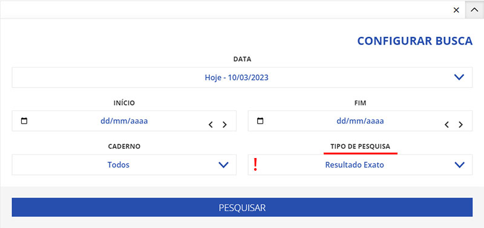
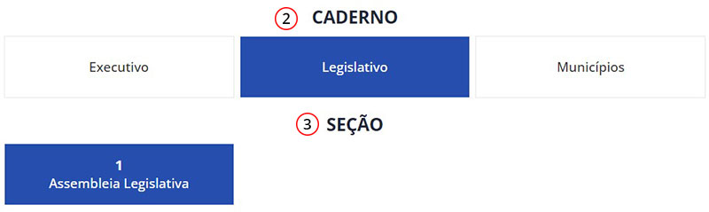
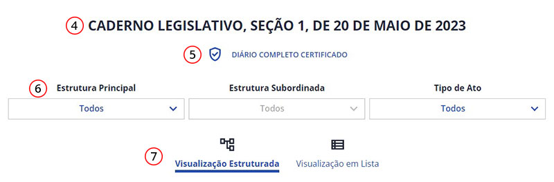
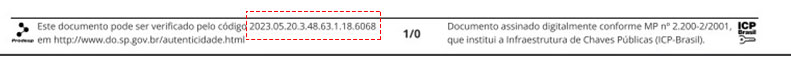

Tudo que você precisa saber ou entender sobre as funcionalidades de nosso site, será encontrado no índice abaixo:
A seguir, iremos mostrar as funcionalidades de nossa Barra de Busca, contida em todas as páginas de nosso site.
Escreva o assunto, título ou conteúdo que deseja localizar em nosso acervo de publicações.
Ao configurar a busca, você pode definir um período da publicação e o caderno ao qual o "termo" digitado pertence:
O campo "Tipo de pesquisa" serve para especificar se o "termo" a ser pesquisado irá ser localizado com base em todas as palavras digitadas separadamente ou juntas, exemplo:
Você digitou: LEI 18702
Resultado Exato: "LEI 18702" - (Procura pelo terno inteiro)
Todas as Palavras: "LEI","18702" - (Procura por cada palavra separadamente).
Por padrão, pré-definimos o "tipo de pesquisa" sempre com formato "Exato"
Este recurso permite ver o nome da página atual assim como exibir os atalhos das páginas anteriores.
A seguir, iremos mostrar tudo que você irá encontrar na página inicial do Diário Oficial:
São publicações de possíveis atas, pautas, avisos, comunicados, editais e etc que estão em maior relevância no momento, trazendo assim mais agilidade ao acessar um assunto que poderá despertar seu intersse.
Apresenta todas as edições publicadas no dia, assim como filtros e calendários para localizar quaisquer edições publicadas anteriormente.
Acesso a uma página muito similar à ferramenta de busca presente no cabeçado de todas as páginas, mas com maiores recuros para um refinamento mais detalhado de pesquisa, trazendo assim maior precisão em seus resultados.
Acesso ao ( Pubinet ) - Local onde nossos clientes escrevem e publicam suas atas, pautas, avisos, comunicados, editais e etc.
Método de pesquisa de um resultado exato de uma determinada edição.
Como podemos nagevar entre as edições publicadas no Diário Oficial de São Paulo?
Você pode definir uma data através dos campos - DIA/MÊS/ANO ou navegar nas páginas das edições anteiroes.
Definir o tipo de publicação.
Pode ou não possuir diversos sub-divisões, isso dependerá diretamente do tipo de caderno selecionado anteriormente.

Tudo que foi definido nos filtros de Caderno, Seção e Data.
Ao selecionar, é possivel baixar um PDF contento todo o material trazido como resultado desta edição.
É possivel que a página mostre somente as edições contidas numa determinada sub-categoria.
Aqui é possivel organizar os resultados trasido na edição do dia nos formatos de visualização de árvore ou lista comum.
Diferente da barra de busca padrão, aqui será possível localizar os arquivos que você procura com maior precisão.
Escreva o assunto, título ou conteúdo que deseja localizar em nosso acervo de publicações.
Você pode definir uma período de intervalo de uma semana, mês, ano ou especificar um período entre duas datas.
Defina um tipo de caderno para que a lista de seções possa ser preenchida.
Defina como a lista de resultados será ordenada: Por "Data" ou "Título".
Serve para especificar se o "termo" a ser pesquisado irá ser localizado com base em todas as palavras digitadas separadamente ou juntas, exemplo:
Você digitou: LEI 18702
Resultado Exato: "LEI 18702" - (Procura pelo terno inteiro)
Todas as Palavras: "LEI","18702" - (Procura por cada palavra separadamente).
Por padrão, pré-definimos o "tipo de pesquisa" sempre com formato "Exato"
A pesquisa por edição autenticada traz um resultado único, basta inserir o código da edição e está surgirá como resultado pronto para ser baixada no formato PDF. A seguir, vamos entender a formatação deste código e onde ele é adiquirido.
Os primeiros dígitos referem-se a data da publicação (organizado por ano, mês e dia). Os demais números refere-se ao tipos de caderno, seção e suas sub-divisões, constituindo assim, um código único para a autenticação do documento padrão do DOESP.
O código fica localizado no rodapé do PDF certificado.
